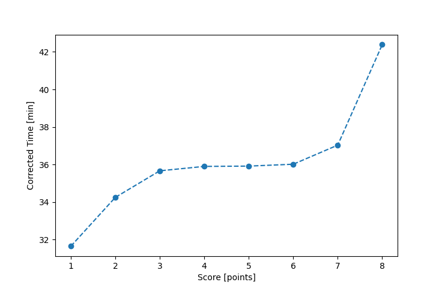

| Wind: | ? (BFT) |
|---|---|
| RC: | Chris_E, Nick_H, Stacy_O |
| Date: | May 15, 2016 |
| Notes: | F1 90 |
| Rank / Score | Name | Boat | Input Time [mm:ss] | Input Offset [mm:ss] | Race Time [mm:ss] | Race Time [s] | Handicap | Corrected Time [s] | Corrected Time [mm:ss] |
|---|---|---|---|---|---|---|---|---|---|
| 1.0 | Bill_P | SF | 31:08 | 00:00 | 31:08 | 1868 | 1.03000 | 1814 | 30:14 |
| 2.0 | Ron_F | F5 | 30:42 | 00:00 | 30:42 | 1842 | 0.98100 | 1878 | 31:18 |
| 3.0 | Rod_H | PUF | 38:11 | 00:00 | 38:11 | 2291 | 1.08700 | 2108 | 35:08 |
| 4.0 | Art_M | SWSX | 35:12 | 00:00 | 35:12 | 2112 | 0.99400 | 2125 | 35:25 |
| 5.0 | Barry_O | HLR14 | 43:03 | 00:00 | 43:03 | 2583 | 1.13300 | 2280 | 38:00 |
| 6.0 | Todd_P | SN | 38:38 | 00:00 | 38:38 | 2318 | 0.94800 | 2445 | 40:45 |
| 7.0 | Patrick_L | SN | 38:51 | 00:00 | 38:51 | 2331 | 0.94800 | 2459 | 40:59 |
| 8.0 | Pat_B | WF | 39:17 | 00:00 | 39:17 | 2357 | 0.94000 | 2507 | 41:47 |

Application Notes:
All race results are unofficial
View source code at https://github.com/cessnao3/portsmouthracecalc/